Mail Lite là ứng dụng đọc và gửi thư trên máy tính, giao diện theo kiểu Outlook classic. Bạn thêm một hoặc nhiều tài khoản (Gmail, Microsoft 365, mail công ty…), ứng dụng tải thư về máy để đọc cả khi không có mạng, và bạn quản lý, trả lời thư ngay trong một cửa sổ.
Mail Lite kết nối bằng giao thức IMAP (nhận thư) và SMTP (gửi thư). Hầu hết dịch vụ mail đều hỗ trợ: Gmail / Google Workspace, Microsoft 365 / Outlook.com, Yahoo, iCloud, Zoho và mail công ty chạy trên hosting, cPanel, Zimbra… Ứng dụng không hỗ trợ POP3 và giao thức Exchange (MAPI/EWS).
Mail-Lite-Setup-1.0.0.exe.Gỡ cài đặt: Settings → Apps → Installed apps → Mail Lite → Uninstall.
Mail-Lite-1.0.0-amd64.deb vào thư mục Downloads.cd ~/Downloadssudo apt install ./Mail-Lite-1.0.0-amd64.debGỡ cài đặt: sudo apt remove mail-lite.
…-mac-arm64.zip cho máy chip Apple (M1 trở lên), …-mac-intel.zip cho máy chip Intel. Xem loại chip tại menu Apple → About This Mac..zip để giải nén, kéo Mail Lite.app vào thư mục Applications.xattr -cr "/Applications/Mail Lite.app" (gỡ nhãn “tải từ internet”, vì ứng dụng chưa ký bằng tài khoản Apple Developer).Lần đầu mở ứng dụng, hộp thoại Thêm tài khoản mail tự hiện ra. Những lần sau, mở lại bằng nút + Thêm tài khoản ở cuối cây thư mục, hoặc thẻ Gửi / Nhận → Thêm tài khoản.
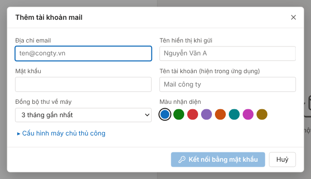
| Ô | Ý nghĩa |
|---|---|
| Địa chỉ email | Địa chỉ đầy đủ, ví dụ ten@congty.vn. Gõ xong, ứng dụng tự nhận diện máy chủ theo tên miền. |
| Mật khẩu | Mật khẩu hộp thư, hoặc mật khẩu ứng dụng với Gmail, Yahoo, iCloud (xem bên dưới). |
| Tên hiển thị khi gửi | Tên người nhận sẽ thấy ở mục “Từ”. |
| Tên tài khoản | Tên gợi nhớ hiện trong ứng dụng, ví dụ “Mail công ty”. |
| Đồng bộ thư về máy | Tải thư trong 30 ngày, 3 tháng, 1 năm gần nhất hoặc toàn bộ hộp thư. Chọn khoảng ngắn thì đồng bộ nhanh và tốn ít dung lượng hơn. |
| Màu nhận diện | Chấm màu đứng trước tên tài khoản trong cây thư mục. |
Bấm Kết nối bằng mật khẩu. Ứng dụng kiểm tra đăng nhập, lưu tài khoản rồi bắt đầu tải thư về. Thanh trạng thái phía dưới báo “Tất cả thư mục đã cập nhật” khi xong.
Ứng dụng đoán máy chủ theo tên miền. Nếu không kết nối được, bấm Cấu hình máy chủ thủ công và nhập thông số do bộ phận IT cung cấp.
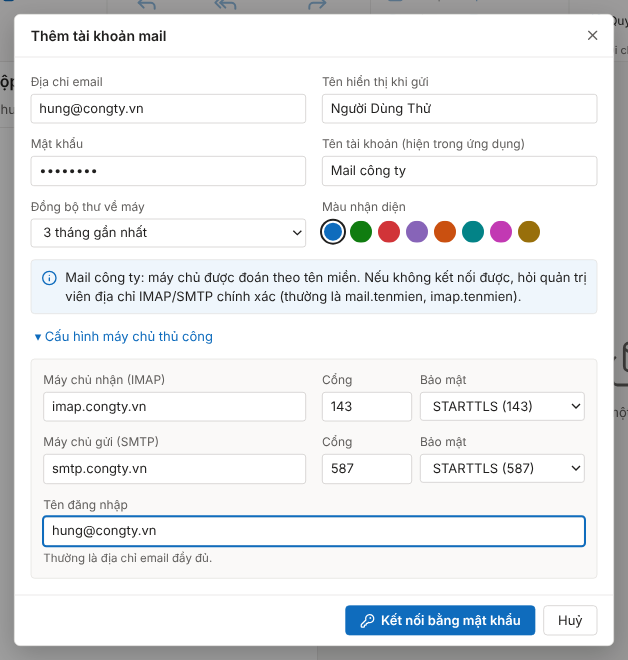
| Ô | Giá trị thường gặp |
|---|---|
| Máy chủ nhận (IMAP) | imap.tenmien hoặc mail.tenmien · cổng 993 (SSL/TLS) hoặc 143 (STARTTLS) |
| Máy chủ gửi (SMTP) | smtp.tenmien hoặc mail.tenmien · cổng 465 (SSL/TLS) hoặc 587 (STARTTLS) |
| Tên đăng nhập | Thường là địa chỉ email đầy đủ. |
Cách nhanh nhất là dùng mật khẩu ứng dụng:
myaccount.google.com/apppasswords, tạo một mật khẩu ứng dụng (16 ký tự).Cách khác là đăng nhập bằng tài khoản Google (OAuth), cần khai báo Client ID trước — xem mục 16.
Microsoft không cho đăng nhập bằng mật khẩu thường nên bắt buộc dùng OAuth. Khi gõ địa chỉ thuộc Microsoft, hộp thoại hiện nút Thiết lập đăng nhập Microsoft…; làm theo hướng dẫn ở mục 16 để khai báo Client ID một lần, sau đó nút đổi thành Đăng nhập với Microsoft.
Dùng địa chỉ email và mật khẩu ứng dụng tạo trong trang quản lý tài khoản của nhà cung cấp.
Mở Gửi / Nhận → Quản lý tài khoản. Bấm biểu tượng bút chì để sửa (đổi mật khẩu, máy chủ, phạm vi đồng bộ, màu), biểu tượng thùng rác để xoá tài khoản khỏi ứng dụng. Xoá tài khoản chỉ xoá bản sao trên máy, thư trên máy chủ vẫn còn nguyên.
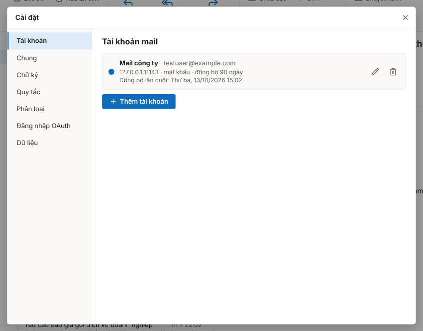
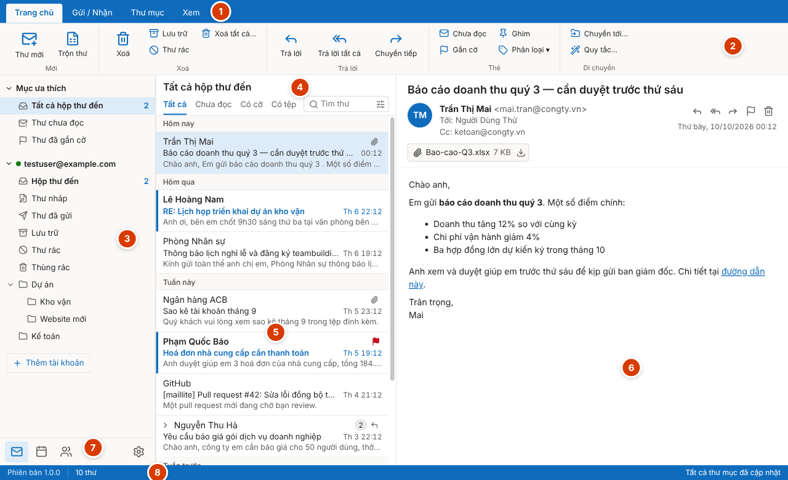
| Số | Vùng | Công dụng |
|---|---|---|
| 1 | Các thẻ công cụ | Năm thẻ: Trang chủ, Gửi / Nhận, Thư mục, Xem, Trợ giúp. |
| 2 | Thanh công cụ | Các nút lệnh của thẻ đang chọn. Nút mờ là nút chưa dùng được (ví dụ chưa chọn thư). |
| 3 | Cây thư mục | Mục ưa thích ở trên, bên dưới là từng tài khoản với các thư mục của nó. Số bên phải là số thư chưa đọc. |
| 4 | Đầu danh sách | Tên thư mục đang mở, các thẻ lọc nhanh và ô tìm kiếm. |
| 5 | Danh sách thư | Thư xếp theo nhóm ngày. Thư chưa đọc in đậm, có vạch xanh bên trái. |
| 6 | Ngăn đọc | Nội dung thư đang chọn, tệp đính kèm và các nút trả lời nhanh. |
| 7 | Chuyển màn hình | Thư, Lịch, Danh bạ; biểu tượng bánh răng mở Cài đặt. |
| 8 | Thanh trạng thái | Phiên bản, số thư đang hiện, số thư đang chọn và trạng thái đồng bộ. |
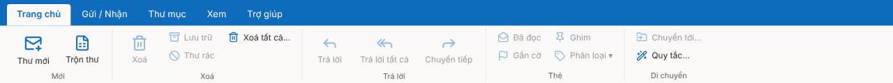
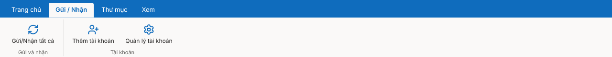
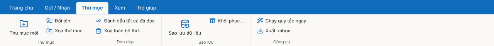
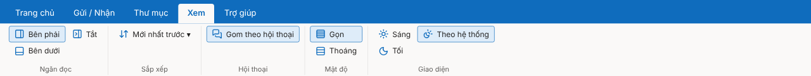
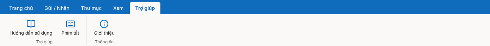
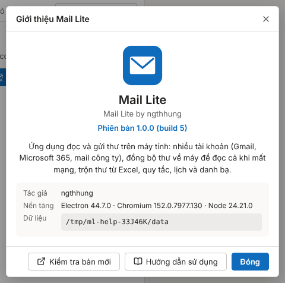
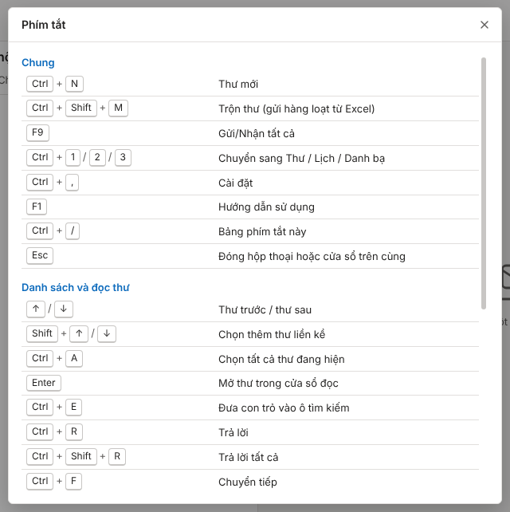
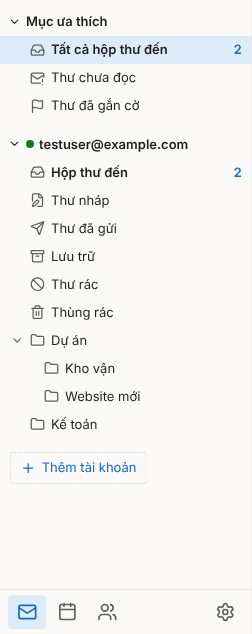
Rê chuột vào đường ranh giữa cây thư mục và danh sách thư, hoặc giữa danh sách thư và ngăn đọc; khi con trỏ đổi thành mũi tên hai chiều thì kéo để đổi độ rộng. Khi ngăn đọc đặt bên dưới, kéo đường ranh ngang để đổi chiều cao. Nhấp đúp vào đường ranh để trở về kích thước mặc định. Kích thước được ghi nhớ cho lần mở sau.
Bấm vào một thư trong danh sách, nội dung hiện ở ngăn đọc. Thư tự được đánh dấu đã đọc (tắt được trong Cài đặt → Chung).
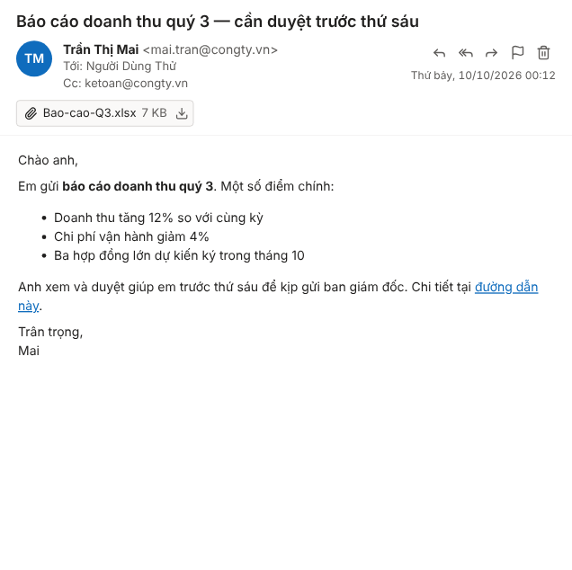
Hình ảnh tải từ máy chủ bên ngoài bị chặn mặc định, vì người gửi có thể dùng chúng để biết bạn đã mở thư. Khi đó ngăn đọc hiện dòng báo; bấm Tải hình ảnh nếu bạn tin người gửi. Ảnh đính kèm trực tiếp trong thư vẫn hiện bình thường. Muốn luôn tải ảnh, bỏ dấu ở Cài đặt → Chung → Chặn hình ảnh từ bên ngoài.
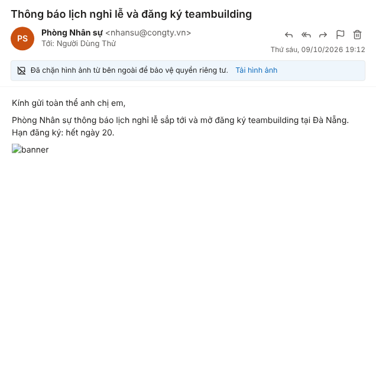
Nhấp đúp vào thư (hoặc chọn thư rồi nhấn Enter) để mở thư trong cửa sổ đọc lớn. Nút mũi tên chéo ở góc trên phải để phóng to, Esc để đóng. Trong cửa sổ này vẫn trả lời, chuyển tiếp, gắn cờ, xoá được. Cách này tiện nhất khi bạn tắt ngăn đọc.
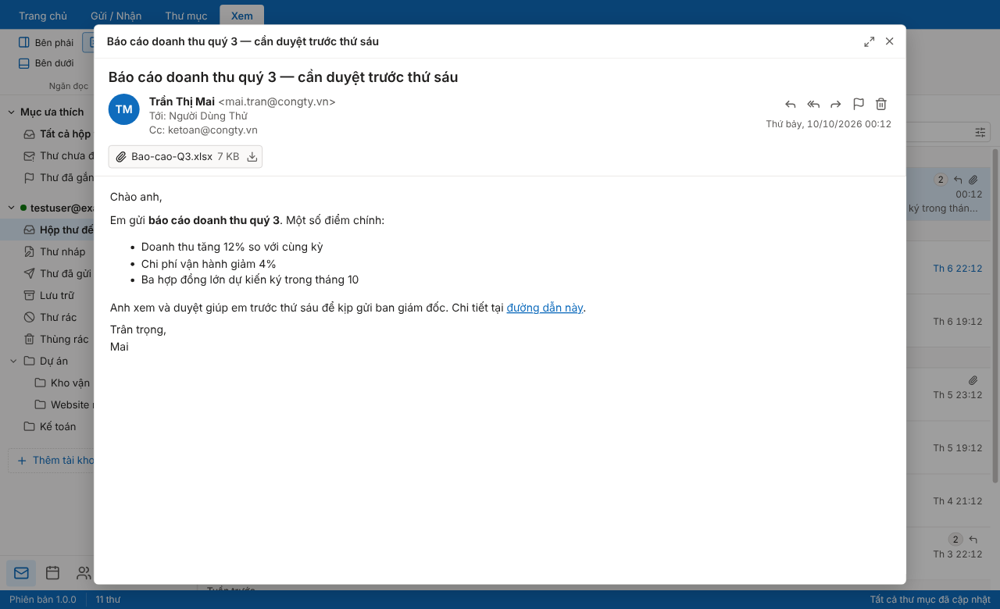
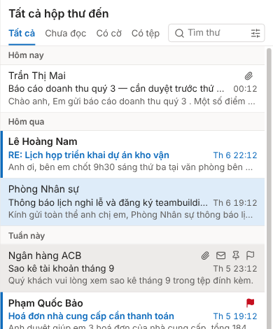
Rê chuột vào một dòng, bên phải hiện ba nút nhỏ: đánh dấu đã đọc / chưa đọc (phong bì), ghim hội thoại (đinh ghim) và gắn cờ (lá cờ). Bấm các nút này không làm mở thư.
Mọi lệnh (xoá, chuyển, đánh dấu, phân loại…) áp dụng cho tất cả thư đang chọn. Thanh trạng thái hiện số thư đã chọn.
Thư gốc và các thư trả lời được gom thành một dòng, có số đếm cho biết cuộc hội thoại gồm bao nhiêu thư. Bấm mũi tên trước tên người gửi để mở ra xem từng thư; thư bạn đã gửi (nằm ở Thư đã gửi) cũng hiện trong chuỗi, có ghi “Tới: …”.
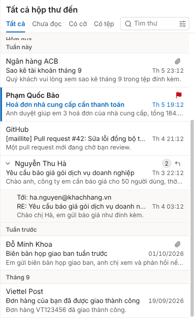
Thư quan trọng có thể ghim lên đầu danh sách, trong nhóm Đã ghim. Ghim bằng nút đinh ghim trên dòng thư, nút Ghim ở thẻ Trang chủ, hoặc menu chuột phải. Ghim một thư là ghim cả cuộc hội thoại; thư trả lời mới về tự được ghim theo. Bấm lại để bỏ ghim.
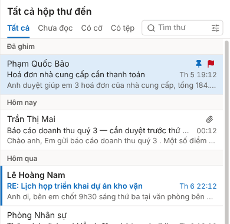
Mở Xem → Sắp xếp và chọn: Mới nhất trước, Cũ nhất trước, Theo người gửi, Theo chủ đề, Theo dung lượng.
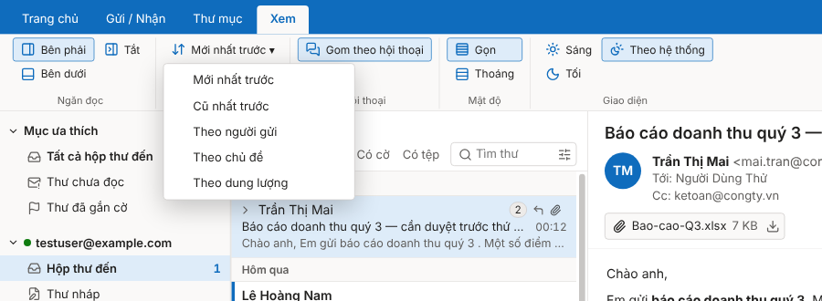
Bấm Thư mới ở thẻ Trang chủ hoặc nhấn Ctrl+N.
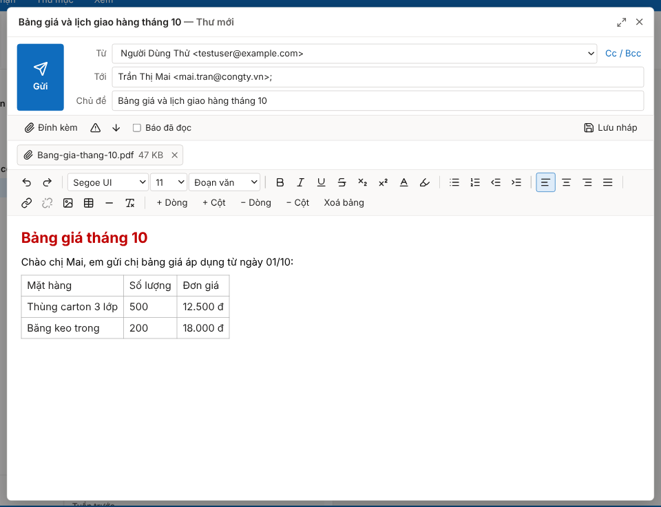
| Thành phần | Cách dùng |
|---|---|
| Từ | Chọn tài khoản gửi khi bạn có nhiều tài khoản. |
| Tới | Gõ địa chỉ người nhận; nhiều người cách nhau bằng dấu chấm phẩy. Khi gõ, ứng dụng gợi ý từ danh bạ. |
| Cc / Bcc | Bấm chữ Cc / Bcc bên phải để hiện thêm hai ô này. |
| Chủ đề | Tiêu đề thư. |
| Nút Gửi | Gửi thư, hoặc nhấn Ctrl+Enter. |
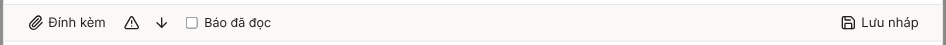
Hai nút ở góc trên phải cửa sổ soạn dùng để phóng to và đóng. Khi đóng thư đang soạn dở, ứng dụng hỏi bạn có muốn lưu nháp không.
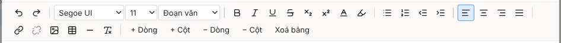
Bôi đen đoạn chữ rồi bấm nút tương ứng. Các nút theo thứ tự từ trái sang phải:
| Nhóm | Chức năng |
|---|---|
| Hoàn tác / Làm lại | Ctrl+Z / Ctrl+Y |
| Phông chữ, Cỡ chữ, Kiểu đoạn | Kiểu đoạn gồm đoạn văn thường, tiêu đề 1–3, trích dẫn, chữ đều. |
| Kiểu chữ | Đậm, nghiêng, gạch chân, gạch ngang, chỉ số dưới, chỉ số trên. |
| Màu | Màu chữ và tô sáng (màu nền chữ). |
| Danh sách và thụt lề | Danh sách chấm, danh sách số, giảm / tăng thụt lề. |
| Căn lề | Trái, giữa, phải, đều hai bên. |
| Hàng thứ hai | Chèn liên kết, bỏ liên kết, chèn ảnh, chèn bảng, đường kẻ ngang, xoá định dạng. |
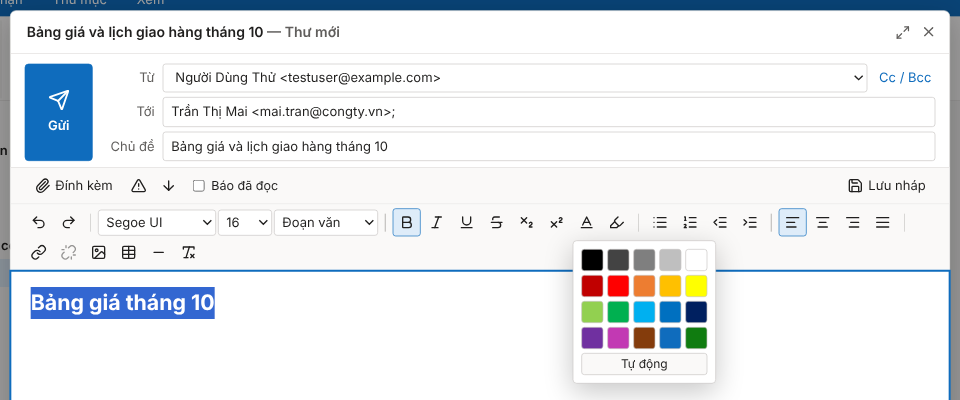
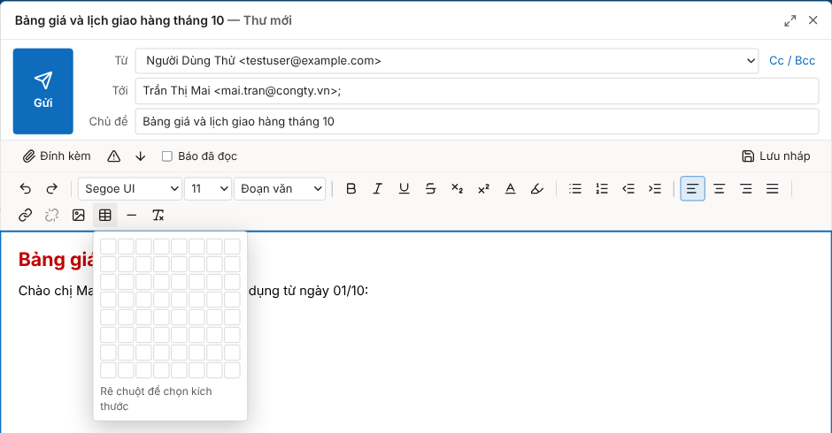
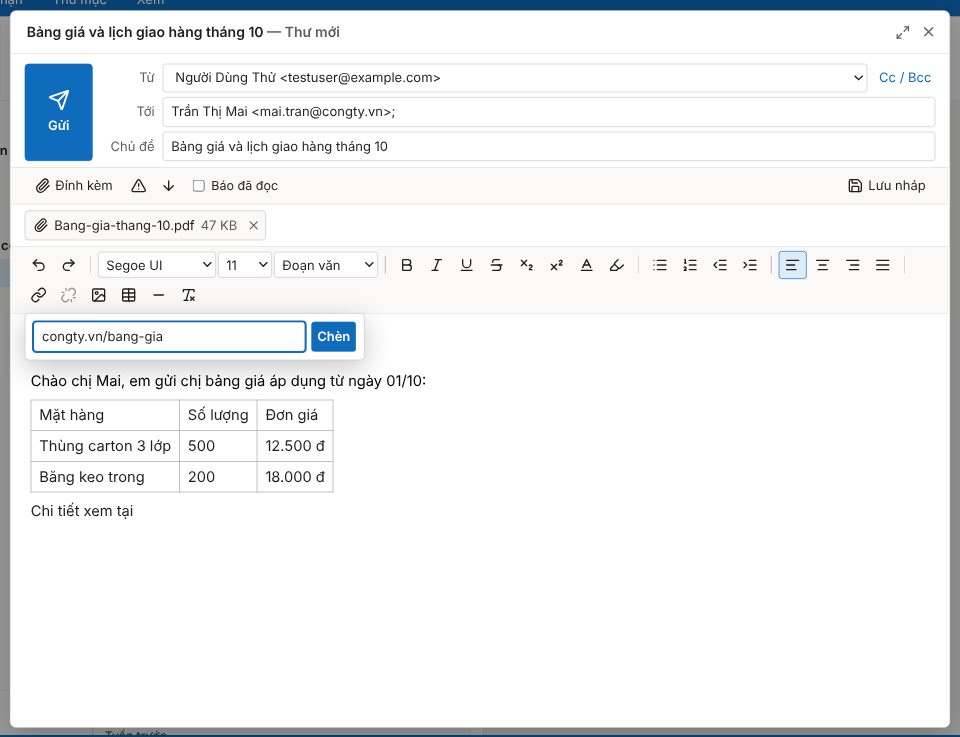
| Lệnh | Phím tắt | Kết quả |
|---|---|---|
| Trả lời | Ctrl+R | Gửi lại cho người gửi. |
| Trả lời tất cả | Ctrl+Shift+R | Gửi cho người gửi và mọi người trong Tới, Cc (trừ bạn). |
| Chuyển tiếp | Ctrl+F | Gửi thư cho người khác, giữ nguyên tệp đính kèm. |
Nội dung thư gốc được trích bên dưới kèm thông tin Từ, Đã gửi, Tới, Chủ đề. Gõ phần trả lời ở phía trên.
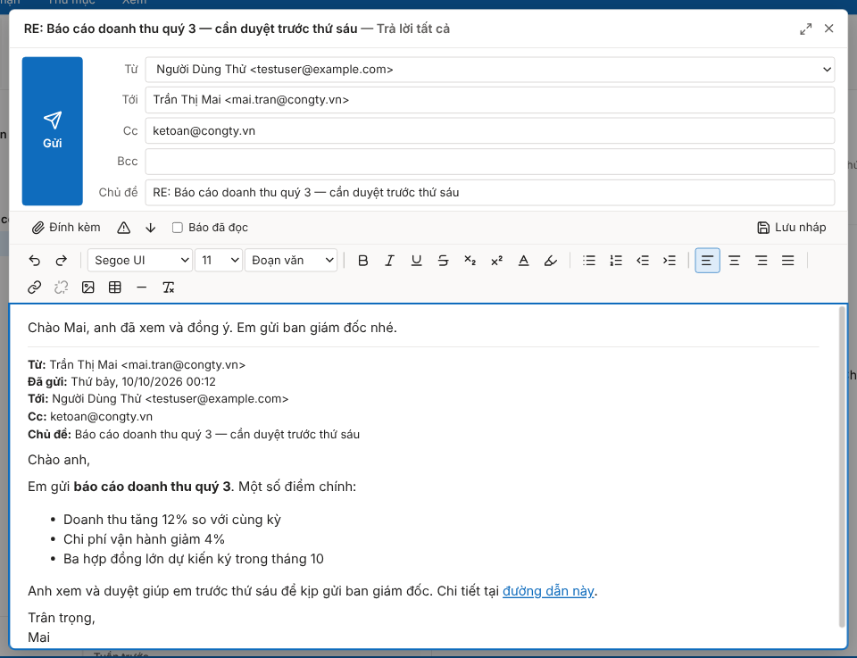
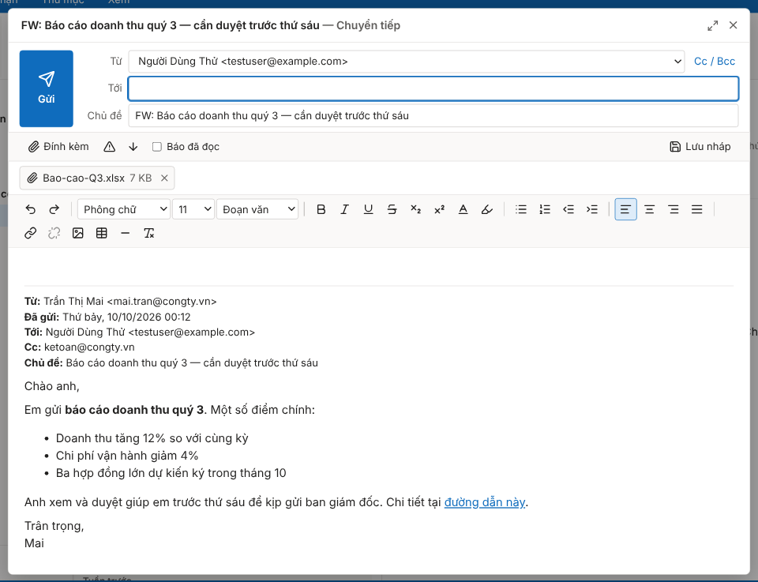
Sau khi bấm Gửi, thư được giữ lại 10 giây trước khi gửi thật. Trong lúc đó, phía dưới màn hình có một thanh đếm ngược:
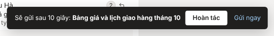
Đổi thời gian chờ (5–60 giây) hoặc tắt hẳn tại Cài đặt → Chung → Hoàn tác gửi.
Tạo chữ ký riêng cho từng tài khoản tại Cài đặt → Chữ ký (xem mục 16). Chữ ký tự chèn vào thư mới, thư trả lời và chuyển tiếp.
Phía trên danh sách thư có bốn thẻ: Tất cả, Chưa đọc, Có cờ, Có tệp. Bấm một thẻ để chỉ xem nhóm thư đó trong thư mục đang mở.
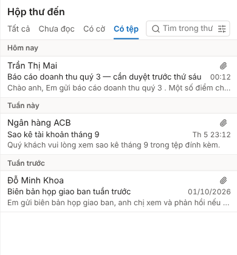
Khi đang gom theo hội thoại, mỗi cuộc hội thoại chỉ hiện những thư khớp với thẻ, kể cả thư bạn đã gửi trong cuộc đó.
Bấm vào ô Tìm thư hoặc nhấn Ctrl+E, gõ từ cần tìm. Ứng dụng tìm trong chủ đề, người gửi, người nhận và nội dung thư.
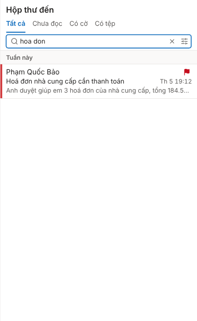
Bấm nút có ba thanh trượt ở bên phải ô tìm. Bảng tìm kiếm nâng cao hiện giữa cửa sổ.
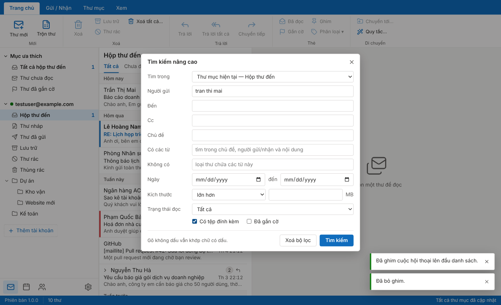
| Ô | Ý nghĩa |
|---|---|
| Tìm trong | Phạm vi tìm (xem danh sách bên dưới). |
| Người gửi, Đến, Cc | Tên hoặc địa chỉ email. |
| Chủ đề | Từ có trong chủ đề. |
| Có các từ | Tìm trong chủ đề, người gửi/nhận và nội dung. |
| Không có | Loại những thư chứa các từ này. |
| Ngày … đến … | Khoảng ngày nhận thư. |
| Kích thước | Lớn hơn hoặc nhỏ hơn một số MB. |
| Trạng thái đọc | Tất cả, đã đọc hoặc chưa đọc. |
| Có tệp đính kèm, Đã gắn cờ | Đánh dấu để chỉ lấy thư có tệp / có cờ. |
Điền những ô cần thiết rồi bấm Tìm kiếm (hoặc Enter). Thư phải khớp tất cả điều kiện đã điền.
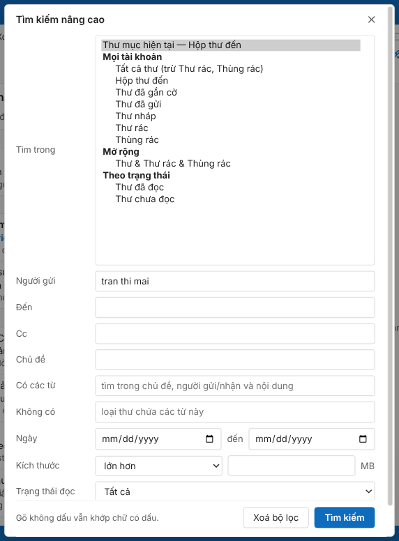
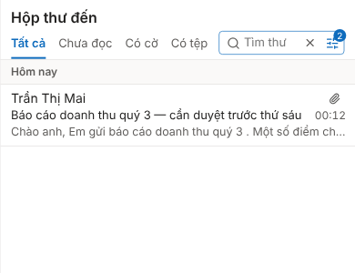
Để bỏ lọc, bấm Xoá bộ lọc trong bảng hoặc dấu × trong ô tìm.
Nhấp chuột phải vào một thư (hoặc nhóm thư đang chọn) để có đầy đủ thao tác:
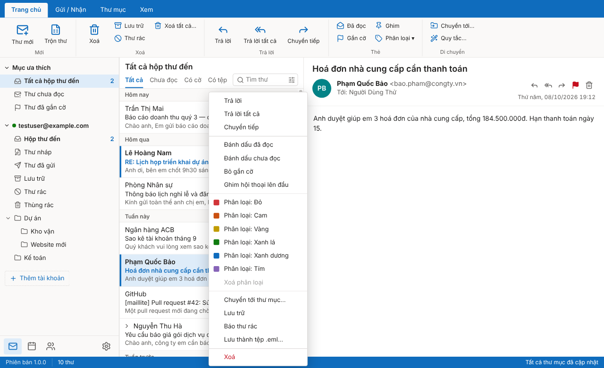
| Thao tác | Cách làm | Ghi chú |
|---|---|---|
| Đánh dấu đã đọc / chưa đọc | Nút Đã đọc / Chưa đọc · Ctrl+Q / Ctrl+U | Hoặc nút phong bì trên dòng thư. |
| Gắn cờ theo dõi | Nút Gắn cờ · Insert | Thư có cờ hiện trong “Thư đã gắn cờ”. |
| Phân loại màu | Nút Phân loại ▾ | Chỉ lưu trên máy này. |
| Chuyển thư mục | Nút Chuyển tới… · Ctrl+Shift+V | Hoặc kéo thư thả vào thư mục. |
| Lưu trữ | Nút Lưu trữ | Chuyển thư sang thư mục Lưu trữ. |
| Báo thư rác | Nút Thư rác | Chuyển thư sang Thư rác. |
| Xoá | Nút Xoá · Delete | Thư vào Thùng rác; xoá trong Thùng rác là xoá vĩnh viễn. |
| Lưu thành tệp | Chuột phải → Lưu thành tệp .eml… | Tệp .eml mở được bằng hầu hết chương trình mail. |
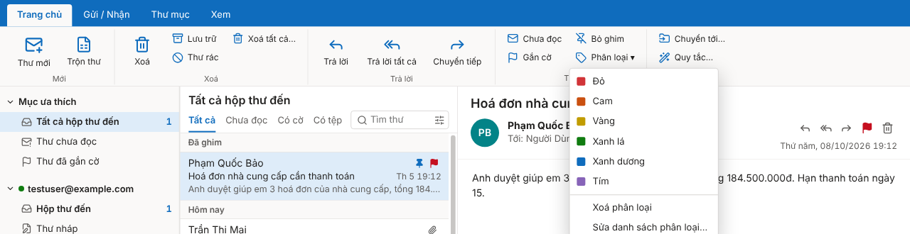
Chọn thư, bấm Phân loại ▾ và chọn một màu. Chọn Xoá phân loại để gỡ. Đổi tên, thêm, xoá phân loại tại Sửa danh sách phân loại… (xem mục 16).
Chọn thư, bấm Chuyển tới…, gõ vài chữ để lọc tên thư mục nếu cần, chọn thư mục rồi bấm Chuyển (hoặc nhấp đúp vào thư mục). Bạn cũng có thể kéo thư từ danh sách thả vào thư mục trong cây thư mục.
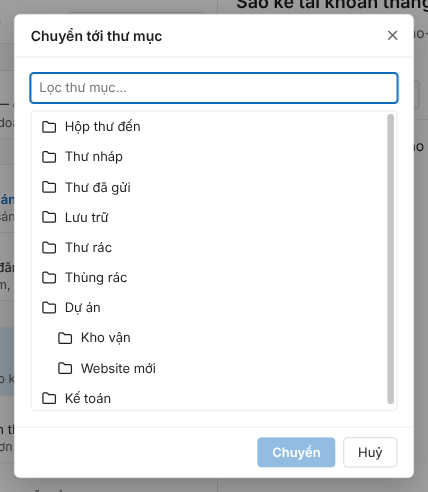
Mở thư mục cần dọn, bấm Xoá tất cả… ở thẻ Trang chủ (hoặc Thư mục → Xoá toàn bộ thư…) và xác nhận.
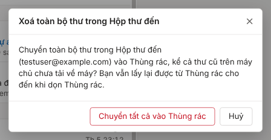
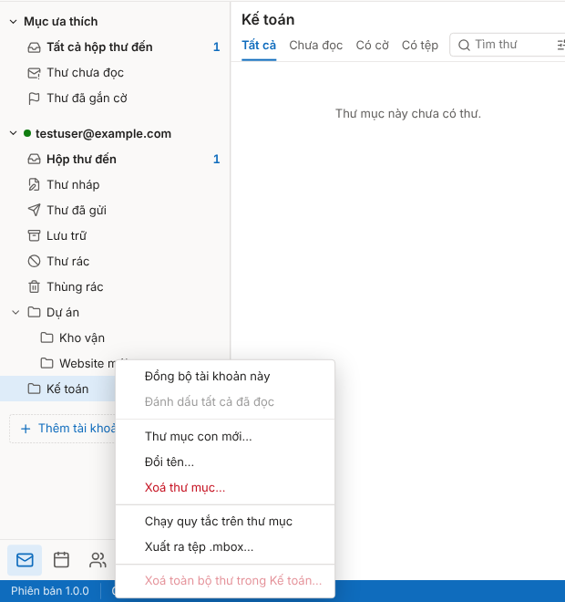
| Việc cần làm | Cách làm |
|---|---|
| Tạo thư mục | Chọn thư mục cha (hoặc tài khoản), bấm Thư mục → Thư mục mới, hoặc chuột phải → Thư mục con mới…, gõ tên rồi bấm Tạo. |
| Đổi tên | Thư mục → Đổi tên hoặc chuột phải → Đổi tên… |
| Xoá thư mục | Thư mục → Xoá thư mục. Thư mục và toàn bộ thư bên trong bị xoá trên cả máy chủ, không hoàn tác được. |
| Đánh dấu tất cả đã đọc | Thư mục → Đánh dấu tất cả đã đọc |
| Đồng bộ một tài khoản | Chuột phải vào thư mục → Đồng bộ tài khoản này |
| Chạy quy tắc trên thư cũ | Thư mục → Chạy quy tắc ngay |
| Xuất cả thư mục | Thư mục → Xuất .mbox: lưu toàn bộ thư của thư mục thành một tệp để sao lưu hoặc chuyển sang chương trình khác. |
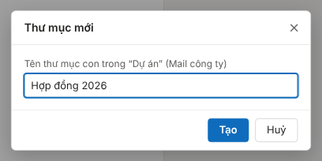
Quy tắc giúp tự sắp xếp thư mới về Hộp thư đến. Mở bằng Trang chủ → Quy tắc… hoặc Cài đặt → Quy tắc, rồi bấm + Quy tắc mới.
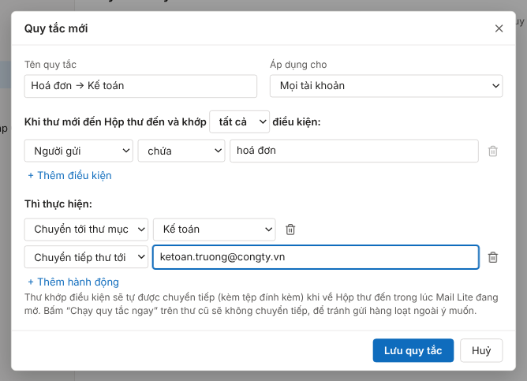
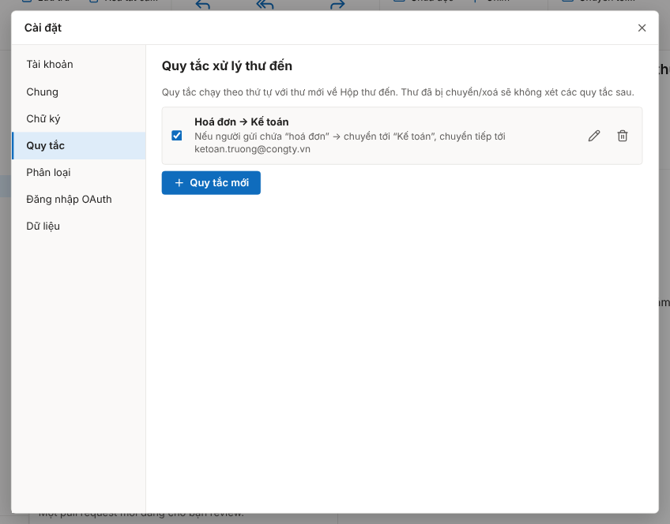
Trộn thư gửi cho mỗi người trong danh sách một thư riêng, nội dung thay đổi theo từng người (tên, số tiền, hạn thanh toán…). Người nhận không thấy địa chỉ của nhau. Mở bằng nút Trộn thư ở thẻ Trang chủ hoặc Ctrl+Shift+M.
Tệp .xlsx hoặc .csv, dòng đầu là tiêu đề cột, mỗi dòng sau là một người nhận.
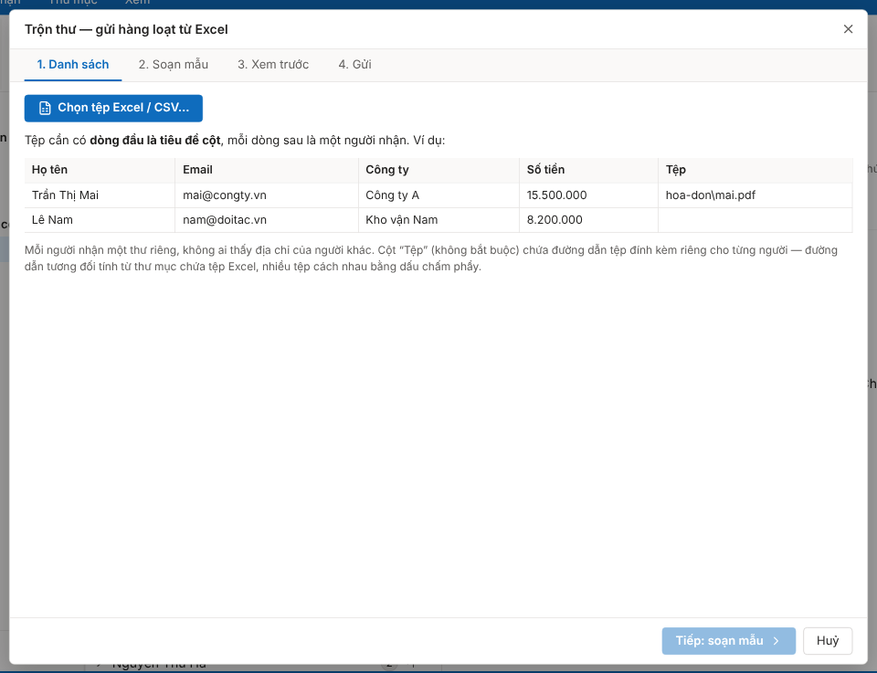
; — những người đó nhận chung một thư.;..xls đời cũ chưa hỗ trợ — hãy lưu lại thành .xlsx. Tối đa 5.000 dòng mỗi đợt.Bấm Chọn tệp Excel / CSV…. Ứng dụng tự đoán cột email; kiểm tra lại ba ô chọn cột: địa chỉ email (bắt buộc), Cc và tệp đính kèm riêng (tuỳ chọn). Bảng bên dưới cho xem trước dữ liệu và số dòng có email hợp lệ.
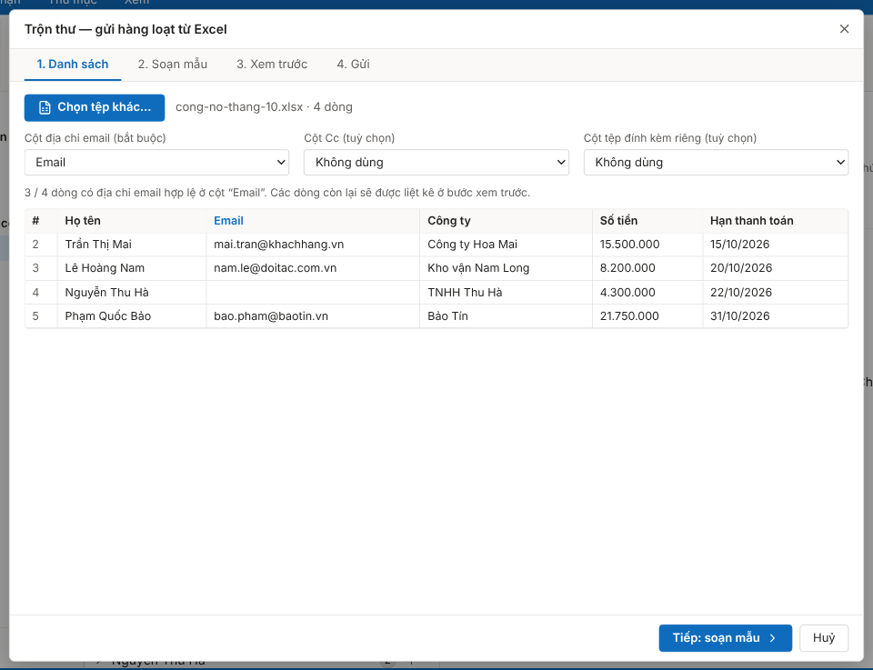
Chọn tài khoản gửi, gõ chủ đề và nội dung. Ở chỗ cần thay bằng dữ liệu từng người, bấm vào tên cột ở dòng “Chèn trường vào nội dung” — ứng dụng chèn {{Tên cột}}. Bạn cũng có thể tự gõ, không phân biệt hoa thường. Trường dùng được cả trong chủ đề.
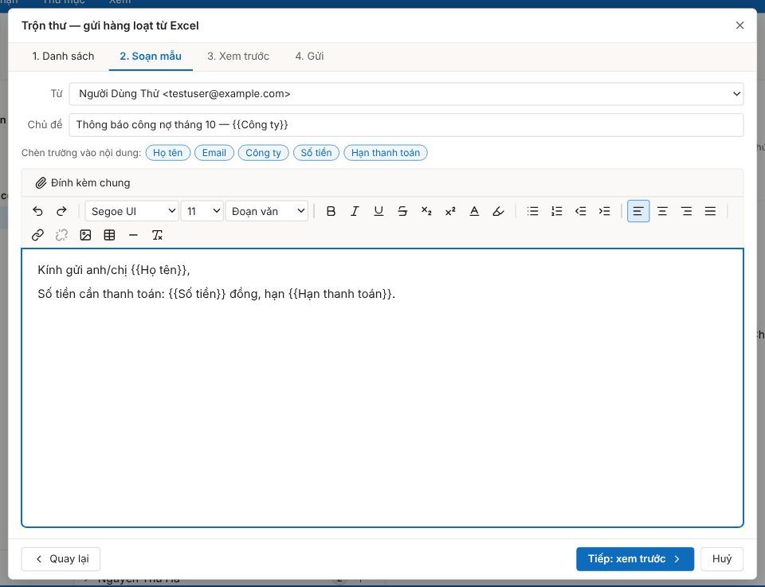
Nội dung định dạng được như thư thường. Đính kèm chung là tệp gửi kèm cho tất cả mọi người.
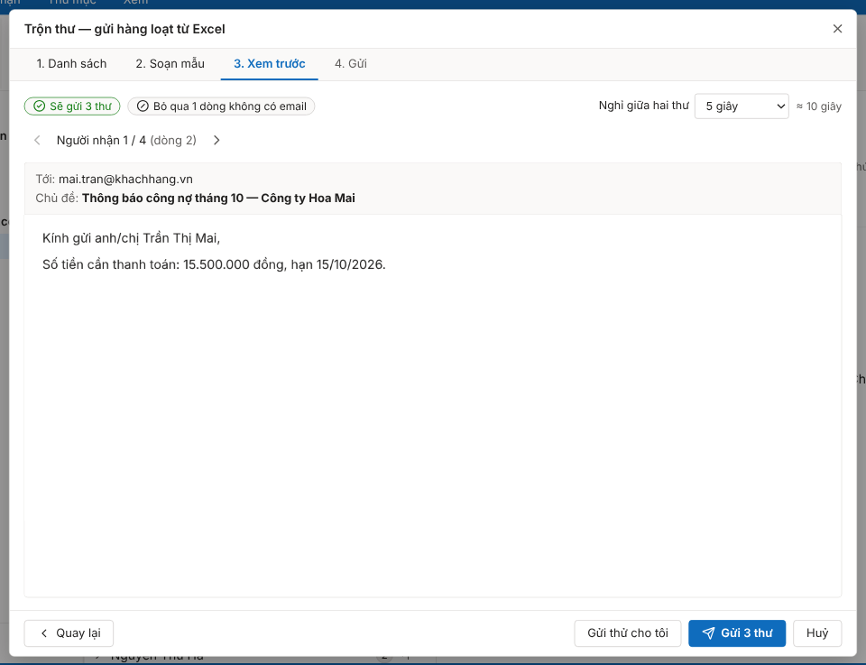
Bấm Gửi … thư và xác nhận. Bảng tiến độ ghi kết quả từng dòng.
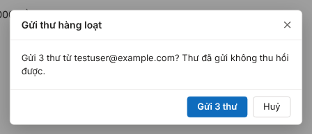
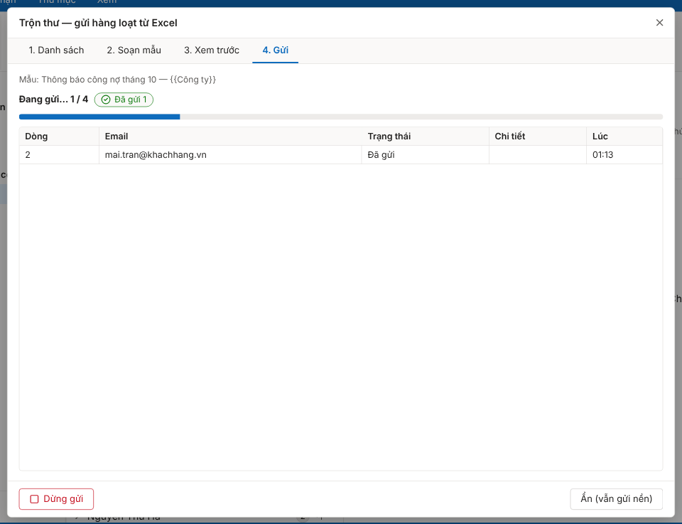
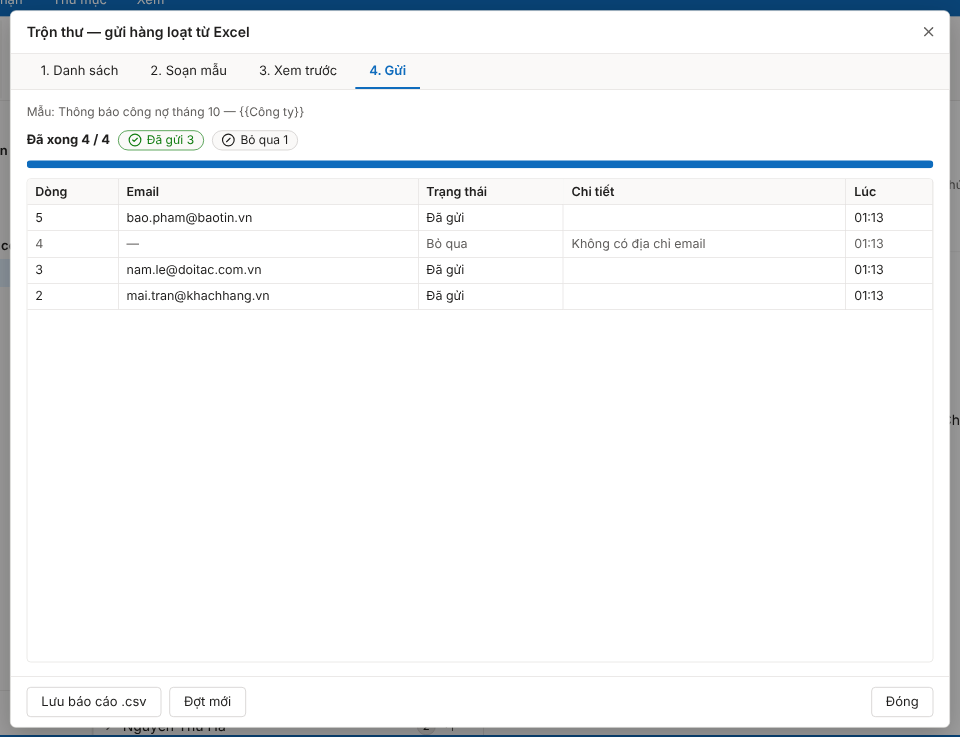
Xong, bấm Lưu báo cáo .csv để lưu kết quả từng dòng, Đợt mới để bắt đầu đợt khác. Các thư đã gửi nằm trong Thư đã gửi.
Đợt gửi được lưu xuống đĩa. Dù bạn bấm Dừng, đợt gửi tự dừng vì lỗi, hay bạn thoát ứng dụng / tắt máy giữa chừng, bạn vẫn gửi tiếp được.
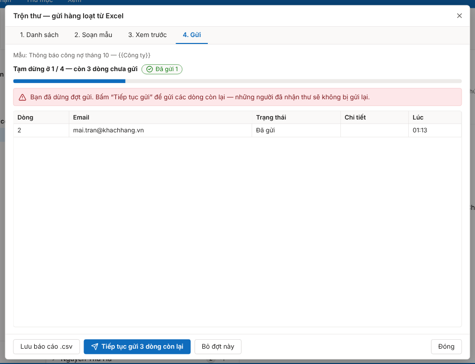
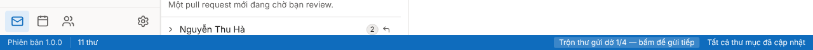
Bấm biểu tượng lịch ở góc dưới bên trái hoặc nhấn Ctrl+2. Lịch hiển thị theo tháng.
Mỗi cuộc hẹn có tiêu đề, giờ bắt đầu và kết thúc (hoặc đánh dấu Cả ngày), địa điểm, màu, ghi chú và nhắc trước: không nhắc, đúng giờ, 5, 15, 30 phút, 1 giờ hoặc 1 ngày. Đến giờ nhắc, ứng dụng hiện thông báo của hệ thống.
Bấm biểu tượng hai người ở góc dưới bên trái hoặc nhấn Ctrl+3.
Mọi tuỳ chọn nằm ở thẻ Xem và được ghi nhớ.
Thoáng cho dòng thư cao, dễ đọc; Gọn thu hẹp khoảng cách để thấy nhiều thư hơn trên một màn hình.
Chọn Sáng, Tối hoặc Theo hệ thống (đổi theo cài đặt của máy).
Bấm biểu tượng bánh răng ở góc dưới bên trái. Cài đặt gồm bảy mục; thay đổi được lưu ngay.
Thêm, sửa, xoá tài khoản — xem mục 3.
| Tuỳ chọn | Ý nghĩa |
|---|---|
| Tự động Gửi/Nhận mỗi | Chu kỳ đồng bộ mọi thư mục: 1, 2, 5, 10, 15, 30 hoặc 60 phút. Hộp thư đến vẫn nhận thư mới gần như tức thời khi máy chủ hỗ trợ. |
| Hoàn tác gửi | Thời gian giữ thư trước khi gửi thật: Tắt, 5, 10, 20, 30 hoặc 60 giây. |
| Hiện thông báo khi có thư mới | Bật / tắt thông báo của hệ thống. |
| Đánh dấu đã đọc khi mở thư trong ngăn đọc | Tắt nếu bạn muốn tự đánh dấu. |
| Chặn hình ảnh từ bên ngoài | Chống người gửi theo dõi việc mở thư. |
Chọn tài khoản, soạn chữ ký (định dạng được, chèn được logo, bảng, liên kết) rồi bấm Lưu chữ ký. Mỗi tài khoản có chữ ký riêng.
Xem mục 11.
Đổi tên, đổi màu, thêm hoặc xoá các phân loại. Đổi tên một phân loại không cập nhật những thư đã gán tên cũ.
Dùng khi muốn đăng nhập Google hoặc Microsoft bằng trang đăng nhập chính thức thay cho mật khẩu. Hai hãng này yêu cầu mỗi ứng dụng mail có một Client ID do bạn hoặc IT công ty đăng ký; việc này chỉ làm một lần. Các bước đăng ký ghi ngay trong màn hình này.
Góc dưới bên phải cho biết tình trạng: “Tất cả thư mục đã cập nhật”, đang đồng bộ, đang ngoại tuyến, hoặc báo lỗi. Rê chuột vào tên tài khoản trong cây thư mục để xem nội dung lỗi của tài khoản đó (thường là sai mật khẩu hoặc mất kết nối).
Trên macOS, dùng phím ⌘ Command thay cho Ctrl.
| Phím | Chức năng |
|---|---|
| Ctrl+N | Thư mới |
| Ctrl+R | Trả lời |
| Ctrl+Shift+R | Trả lời tất cả |
| Ctrl+F | Chuyển tiếp |
| Ctrl+Enter | Gửi thư đang soạn |
| Ctrl+S | Lưu nháp thư đang soạn |
| Delete | Xoá thư đang chọn |
| Ctrl+Q / Ctrl+U | Đánh dấu đã đọc / chưa đọc |
| Insert | Gắn / bỏ cờ |
| Ctrl+Shift+V | Chuyển tới thư mục |
| Ctrl+A | Chọn tất cả thư đang hiện |
| ↑ / ↓ | Thư trước / thư sau |
| Enter | Mở thư trong cửa sổ đọc |
| Ctrl+E | Đưa con trỏ vào ô tìm kiếm |
| F9 | Gửi/Nhận tất cả |
| Ctrl+Shift+M | Trộn thư |
| Ctrl+1 / 2 / 3 | Chuyển sang Thư / Lịch / Danh bạ |
| F1 | Hướng dẫn sử dụng |
| Ctrl+/ | Bảng phím tắt |
| Ctrl+, | Cài đặt |
| Esc | Đóng hộp thoại hoặc cửa sổ trên cùng |
| Khi soạn thư | |
| Ctrl+B / I / U | Đậm / nghiêng / gạch chân |
| Ctrl+K | Chèn liên kết |
| Ctrl+Z / Ctrl+Y | Hoàn tác / làm lại |
| Tab (trong bảng) | Sang ô kế; ở ô cuối thì thêm dòng mới |
Gmail không nhận mật khẩu thường từ ứng dụng mail. Hãy tạo mật khẩu ứng dụng như hướng dẫn ở mục 3.
Mỗi tài khoản chỉ tải thư trong phạm vi đồng bộ đã chọn (mặc định 3 tháng). Mở Gửi / Nhận → Quản lý tài khoản, sửa tài khoản và chọn phạm vi dài hơn.
Số đếm tính cả thư bạn đã gửi trong cuộc hội thoại đó (nằm ở Thư đã gửi).
Mở Thùng rác của tài khoản, chọn thư và dùng Chuyển tới… để đưa về Hộp thư đến. Thư đã xoá khỏi Thùng rác thì không lấy lại được.
Chỉ trong thời gian chờ của Hoàn tác gửi (mặc định 10 giây). Có thể tăng lên tối đa 60 giây trong Cài đặt → Chung.
Được: Cài đặt → Dữ liệu → Đổi nơi lưu…
Thư vẫn nằm trên máy chủ nên chỉ cần cài Mail Lite và thêm lại tài khoản trên máy mới. Riêng ghim, phân loại màu, quy tắc, chữ ký, lịch và danh bạ lưu trên máy cũ, cần thiết lập lại.
Mật khẩu và mã đăng nhập được mã hoá bằng kho khoá của hệ điều hành (Windows DPAPI, macOS Keychain, Linux Secret Service) và chỉ lưu trên máy của bạn.
— Mail Lite by ngthhung · Phiên bản 1.0.0 —